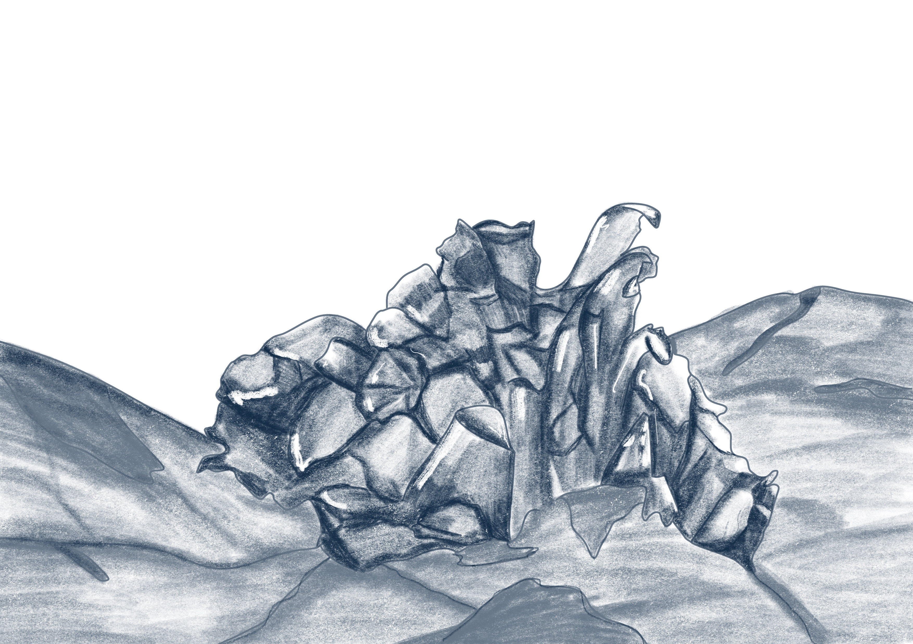

Ulva Lactua
Lechuga de mar

La Lechuga de mar (Ulva Lactua) es una especie de tipo fauna perteneciente a la familia Ulvaceae.
Se distribuye en las zonas de costas rocosas, estuarios y zonas intermareales de todos los mares y océanos del mundo, prefiere aguas ricas en nutrientes y es nativa de la zona de Punta del Diablo. Su estado de conservación es no evaluado, aunque es considerada unaespecie común y abundante a nivel global.
Su morfología se destaca por su tamaño, ya que puede variar desde unos pocos centímetros hasta unos 45-50 cm, dependiendo de las condiciones ambientales. Su follaje es plano, lobulado y translúcido, se asemeja a una hoja de lechuga y no posee flores, ya que es un alga y no una planta vascular . Se adhiere a las rocas y conchas mediante una pequeña estructura llamada rizoide.